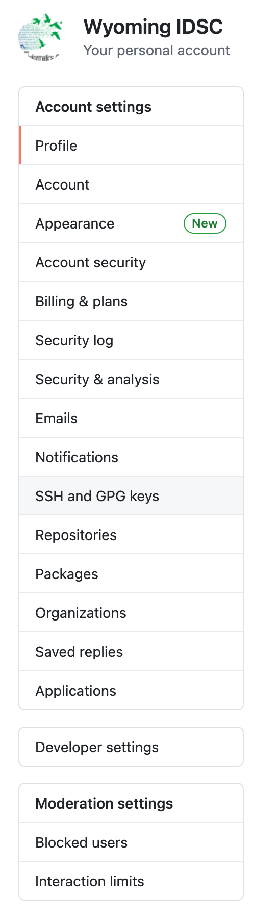
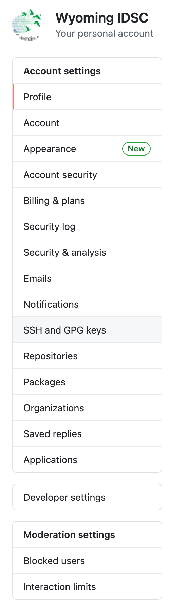

This module is a part of MOLB5700 (Beyond the Bench: Fundamental Skills for Biomedical Researchers)
1. The importance of reproducible data analysis
2. What is git and why should you care?
3. What is github and how does it work with git
4. SSH Authentication with keys
4. Create Your first git repository
6. Configure the repository for github
7. Commit and push your changes to github
You are likely already familiar with the concept of reproducible research. In the field of scientific research, we put great value on being able to repeat the work of others and confirm their results. This reproducibility is essential to ensure that empirical observations made by scientists are rooted in facts and are not just a fluke or an observation occurring by chance alone. Peer-review also ensures, at least in part that the results are repeatable/reproducible.
This same principle can also be applied to statistical analysis. As you are aware, we are in the midst of a data revolution. Take the example of the field of genomics. The amount of data scientists are generating using genomic sequencing is rising exponentially. More data is leading to development of increasingly complex statistical models and routines. A whole generation of scientists are devoting their careers to data analysis alone.
As graduate students, no matter what your subdiscipline, you will be dealing with a lot of data. You will generate, collect and analyze data. You will write scripts, save them in some obscure location on your computer, you will write a paper based on it, send it off to peer review. A few months later, you will hear from the reviewers who will ask you some tough questions about the analysis and interpretation and more likely than not ask you to repeat your analysis with a different set of parameters (among other things).
Off then you go looking for your raw data, transformed data and scripts. If you are lucky, you find all of those things. But did you annotate your scripts properly? If you did, you are lucky. If not, you are going to have to relearn what exactly the script is doing (or do some time travel to your younger self). Then you try to rerun the script, and of course it doesn’t work. The R functions have changed a bit in their new version and the old routine produces lots of error messages. You are under a deadline to respond to the reviewers and now you are having to retrace every single step of your analysis from before. You get the gist.
Cue reproducible data analysis. How can you achieve the goldi locks zone?
But in order to get there, you will need to invest some time in developing a tool kit.
Before we get to git, let’s familiarize ourselves with a BASH terminal. In the spotlight search (top right corner - magnifying glass icon), type terminal and hit enter.
On Macintosh, this window is called a terminal. On different systems, it can have different names (e.g. xterm, shell). But they all run the same program called BASH. At the core of a computer, there is a set of programs (called kernel) which controls the basic functions such as identifying all the hardware and allowing communication amongst them. When you plug in a USB key into a USB port, it’s the kernel that recognizes that a new piece of hardware is plugged in and connects it to the rest of the system.
But in order for us to make the computer do what we want, there are other programs which act as an interface between the computer and us. BASH is one such program. You can also refer to it as shell.
As an example, let’s run a couple of commands in the shell:
ls is a Unix command (also available on Mac because it is based on Unix) that lists contents of a given location.
But what location is that?
pwd is acronym for print working directory i.e. the location you are at in the terminal right now.git?- Git is a version control program
- Git runs inside the BASH terminalImagine that you are writing a term paper over several weeks. Over the course of your writing, you make numerous changes to this document by adding, deleting or editing matter. If you allow git to monitor these changes you are making, it keeps a meticulous record of those changes saving them as incremental versions.
And in doing so, it allows you to undo a change, revert to a previous version or in general not having to worry about what changes you made when.
This workflow can be applied to any number of entities e.g. reports, manuscripts, to-do lists, scripts etc.
So then how does this all work? Let’s start simple. In your terminal window, invoke git to check its current version number:
Your output maybe different. It all depends upon when git was installed on your computer and if it was updated recently. All Macintosh systems ship with git pre-installed, so you should all have access to it.
What if you want to learn what types of commands are incorporated into git? Like all Unix programs, git also comes with a built-in user manual. You can invoke it by doing one of two things:
Simply type git at the terminal and it will print help menu to the screen.
Or invoke the standard user manual page using man git
GitHub is a web interface that works on the same principles as git. Essentially, you can create a copy of your local git project (called a repository) on GitHub. This system really shines when you need to collaborate with someone else e.g. your advisor or a fellow scientist in your lab.
GitHub makes it easy for two or more people to simultaneously work on the same project and add/edit/delete items from the repository.
The underlying git functionality seamlessly keeps track of changes by all collaborators on a repository and in case of conflicts, allows them to resolve such conflicts.
We will assume that you each have a free github account. Login to your account.
At the top right hand corner, you will see a + icon. Click on it and choose create a new repository.
Instead, you will be using a much more secure form of login called SSH, short for Secure SHell. A SSH password is called a key, which is much longer than a typical, secure password. But perhaps even more importantly, it is encrypted.
A SSH key comes as a pair of a public password, and a private password. You provide your public part to others who you wish to securely communicate with (i.e. Github in this instance). The private key should never be shared with anyone for any purpose. It will sit securely on your computer inside a hidden folder.
In this section, we will generate a SSH key pair and then associate the public key with your Github.com account.
ssh-keygen. It comes preinstalled with the OS. Windows users should be able to access this program inside git bash.Here, -t rsa flag tells the program to use RSA encryption algorithm when generating the private key. RSA stands for first initials of the three authors who developed this algorithm (Rivest, Shamir & Adleman) in 1977.
-b flag denotes amount of bits to use (size of the key)
-C flag allows a comment, which in this case is your email address associated with github. It will become part of your key.
Once you hit enter, your system will present the following dialogue:
Generating public/private rsa key pair.
Enter file in which to save the key (/Users/wyoibc/.ssh/id_rsa): Notice that the keys will be stored inside your home directory in a hidden folder named .ssh.
By default the keys are named: id_rsa (private) and id_rsa.pub (public). But you don’t have to keep this name. If you wish to change is, type it out. An example could be: /Users/wyoibc/.ssh/t_rex. If you want to keep the default, just hit enter.
Next, the system will ask if you want to protect these keys with a passphrase. If you choose to enter a passphrase, you will need to memorize it and the system will ask you to enter it everytime you wish to use the key. I personally always use a passphrase.
Enter passphrase (empty for no passphrase):
Your identification has been saved in /Users/wyoibc/.ssh/t_rex.
Your public key has been saved in /Users/wyoibc/.ssh/t_rex.pub.
The key fingerprint is:
SHA256:4ps5bMhN7293Grtr0v+dCsUI4Ji02WQL9v+Wut7uOu4 name@host.edu
The key's randomart image is:
+---[RSA 4096]----+
| + + |
| o % o |
| = = . |
| . . o |
| . S. . o |
| ... . o |
| . =.. *. |
| o =+..* =o. o|
| .+o=EBB=Booo|
+----[SHA256]-----+The key has now been copied to your clipboard.
Next, go to GitHub.com and login to your account. Choose settings, and then SSH keys as follows:
 

New SSH key and use ctrl+V to paste your public key into the available box and choose a title. Leave no spaces in the title. A title is just an identifier for your key. Finally, choose Add SSH key to complete the process.
ssh-agent is enabled on your system, and add your newly created ssh key to the agent. If you set up a passphrase earlier, you will need to enter it now.Host *
AddKeysToAgent yes
UseKeychain yes
Host wyoibc.github.com
HostName github.com
User git
PreferredAuthentications publickey
IdentityFile ~/.ssh/t_rexNow that your keys are loaded into the ssh-agent, you can check to make sure github will recognize them.
In the terminal, type the following:
> The authenticity of host 'github.com (IP ADDRESS)' can't be established.
> RSA key fingerprint is SHA256:nThbg6kXUpJWGl7E1IGOCspRomTxdCARLviKw6E5SY8.
> Are you sure you want to continue connecting (yes/no)?yes and hit ENTER. Then your key will be tested and if everything goes well, Github will present you with this message:v flag translates to verbose, which will show you more details. What did you see?So far we have simply been making preparations to use git and github. Now we can test out our set up.
Create following folder structure on your machine:
Note that we are using the same name for our local repository as we did on GitHub. This is important.
Next, invoke git and ask it to monitor this repo (short for repository)
git status
On branch master
No commits yet
nothing to commit (create/copy files and use "git add" to track)git is now monitoring the repo and it is telling us that no changes have taken place at this location.
In the next section, we will generate some simple content for our repo.
vim text editor and create a new file:
git status
On branch master
No commits yet
Untracked files:
(use "git add <file>..." to include in what will be committed)
README.md
nothing added to commit but untracked files present (use "git add" to track)git is telling us that there is a new file, but it is not being currently tracked.
Add the file to git’s memory so that it will start monitoring it:
git add README.md
git status
On branch master
No commits yet
Changes to be committed:
(use "git rm --cached <file>..." to unstage)
new file: README.mdBefore we can push our newly created content to the GitHub repository we created earlier, we need to configure the local repository so it knows about the remote (GitHub) repository.
Configuring essentially consists of making a connection between local and remote. Here is how to do it:
Add your user name
git config --list
user.name=wyoibc
user.email=wyoinbre@gmail.com
remote.origin.url=git@github.com:wyoibc/test
remote.origin.fetch=+refs/heads/*:refs/remotes/origin/*git commit -m "my first commit"
[master (root-commit) 79f60ea] my first commit
1 file changed, 5 insertions(+)
create mode 100644 README.mdEnumerating objects: 3, done.
Counting objects: 100% (3/3), done.
Delta compression using up to 8 threads
Compressing objects: 100% (2/2), done.
Writing objects: 100% (3/3), 279 bytes | 279.00 KiB/s, done.
Total 3 (delta 0), reused 0 (delta 0), pack-reused 0
To github.com:wyoibc/test
* [new branch] master -> master
Branch 'master' set up to track remote branch 'master' from 'origin'.If you get an error message, bring it up with your instructors.
Refresh your browser page for the repo and make sure this upload is showing up there.